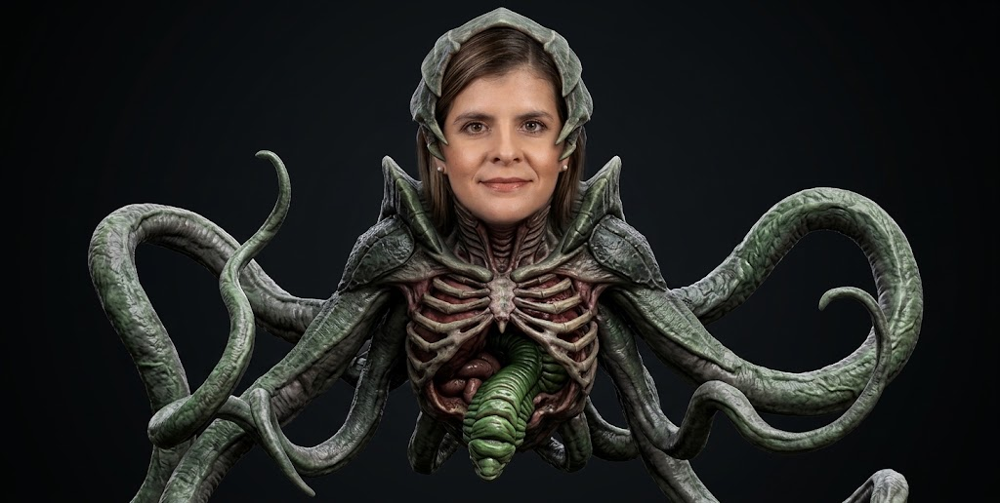
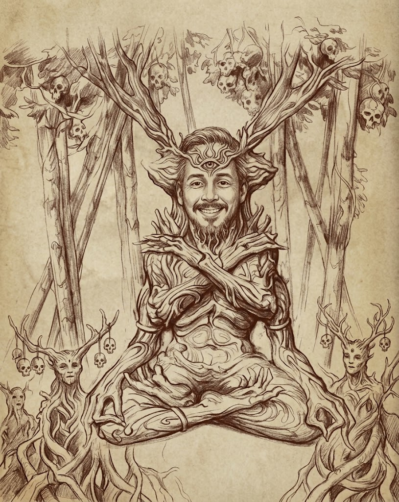

Sylvian: amor, vida y promesas

Sylvian es una deidad relacionada con el amor, la unión y la creación de vida.
Divinidad y Deidades

Sylvian es una deidad relacionada con el amor, la unión y la creación de vida.

Vinushka representa las fuerzas de la naturaleza, el crecimiento y la destrucción natural.

Gro-goroth es una deidad asociada con la destrucción, el sacrificio y el poder devastador.